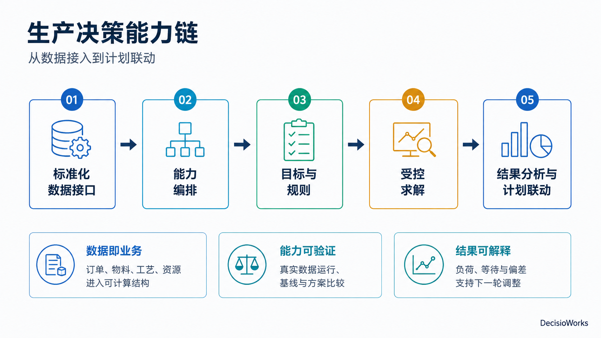

你现在遇到哪类问题？
| 当前问题 | 先看什么 | 希望得到的判断 |
|---|---|---|
| 有订单和产能数据，但计划仍靠人工拼表 | 冲压计划案例：需求、时间与资源如何连接 | 现有数据能否支撑计划生成，缺口在哪里 |
| 产量能满足，但顺序和换型难以权衡 | 注塑排程案例：改变偏好后比较实际序列 | 哪些指标发生变化，付出了什么代价 |
| 已有 ERP/MES，希望补上生产决策能力 | 伙伴接入：数据映射、调用与结果回传 | 保留现有系统，明确需要新增的工作 |
| 业务一直变化，担心系统很快跟不上 | 能力分工与实施路径 | 哪些变化改数据，哪些改规则或应用 |
你提供什么，工具包产出什么？
企业提供业务事实和管理判断。DecisioWorks 把这些输入组织成计算过程，再把结果交给计划员或业务系统使用。商业部署可以沿这条链路持续运行；初次接入先用一个明确场景建立共同口径。
| 环节 | 需要提供 | 可以检查的产出 |
|---|---|---|
| 业务数据 | 订单、产品、工艺、资源、日历，以及场景需要的物料或库存 | 统一对象、数据映射与关系检查结果 |
| 管理意图 | 交期与负荷等优先级、允许调整的范围、必须遵守的规则 | 目标与规则配置、启用状态 |
| 计划生成 | 选定的能力流程和授权范围内的运行资源 | 求解状态、候选计划、计划量或作业序列 |
| 复核与调整 | 业务人员对结果的判断，以及执行中的实际偏差 | 指标与明细、前后比较、下一轮调整依据 |

为什么这些能力可以持续使用？
| 发生的变化 | 对应的能力 | 对使用者的意义 |
|---|---|---|
| 数据换了来源，字段名称不同 | 标准化数据接口与 data_layer | 维护数据映射，业务含义可以沿用 |
| 管理偏好或现场规则改变 | objective_system 与 marginal_control | 明确记录取舍与规则，比较调整前后的结果 |
| 业务处理流程改变 | 标准动作与能力编排 | 重新组合已有能力，保留运行记录 |
| 模型或算法升级 | GOCK 与模型适配层 | 通过接口衔接，减少对业务应用的直接影响 |
| 需要行业页面或系统对接 | 开放的 DecisioCore 参考实现 | 伙伴可以理解实现、复用接口，或编写自己的调用代码 |
数据映射、规则配置、案例记录和行业应用会逐步成为企业与伙伴的资产。代码开放让调用方式和决策流程可以被理解；实际使用与分发遵循相应版本的授权条款。
从适合自己的入口继续
- 制造企业：先确定一个经常需要调整的计划问题，带着数据样表阅读案例。
- 咨询与园区伙伴：把问题诊断转成数据准备、方案比较和业务复核的具体任务。
- 工业软件伙伴与开发者：先看接入分工，再看标准接口和开放参考实现。